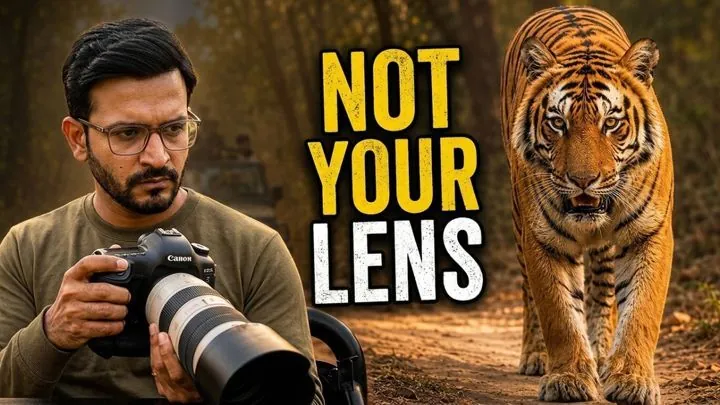
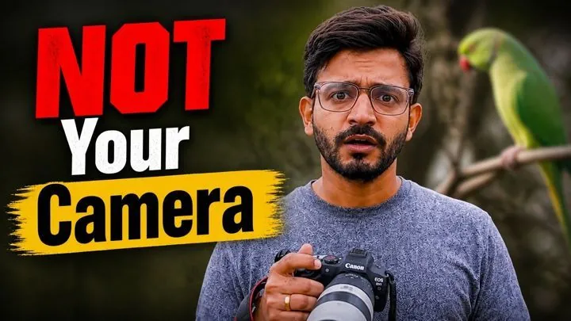

Why Wildlife Photographers Always Miss the Best Shots (It's Not What You Think)
The most-watched long video on the channel, with 3,000+ views.
From the book
“Most missed shots in wildlife photography aren’t missed because of the wrong shutter speed. They’re missed because the photographer moved, spoke, or pressed the shutter half a second before the animal committed to the behavior that would have made the frame.”

Read free: IntroductionThe Natural Angle: WAIT. WATCH. SHOOT.
Go deeper

How I shot thisTern vs darter: the half-second window
Up next

7:49Blurry Tiger Photos? Your ONE Setting Is Wrong — Fix It on SafariPhotography tips

7:23Wildlife Photography Mistake I Blamed on My Lens (It Was My Settings)Camera settings